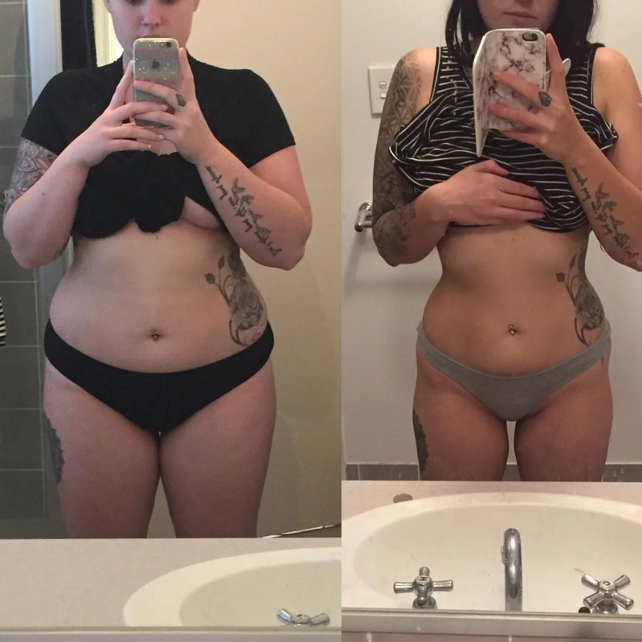

Olá, aqui é o Carlos mais uma vez… e obrigado por deixar o Chá Talence fazer parte da sua rotina a partir de hoje.
Antes de mais nada, eu gostaria de te dar os parabéns, porque você conseguiu…
Você acabou de tomar uma das decisões mais inteligentes de toda a sua vida...
Então, deixa eu te ajudar a se dar conta do que acabou de acontecer…
Você chegou até essa página como uma prisioneira do seu próprio corpo…
E agora está a apenas alguns passinhos de conquistar o corpo magrinho e saudável que você sempre sonhou.
Você chegou até aqui sem esperança, e com medo do futuro...
Mas agora você sabe que agarrou uma oportunidade única de escrever sua própria história de sucesso!
O excesso de peso pode ter mantido você presa no mesmo lugar por muito tempo…
Mas, no final das contas, você percebeu que na verdade, nada do que estava acontecendo era culpa sua, e decidiu fazer algo a respeito.
Você simplesmente pensou:
“Eu não vou mais suportar tudo isso… chega! A partir de hoje, eu vou me transformar na minha melhor versão!”
E voilá, a partir do momento em que você disse sim para o Talence, seu pesadelo finalmente chegou ao fim.
Por isso, fico muito animado em te dizer que você não comprou apenas um produto…
Mas praticamente salvou a sua vida!
E por quê?
Porque não existe absolutamente nenhum aspecto dela que não vai melhorar quando você finalmente ver o peso na balança descendo, as gordurinhas localizadas sumindo…
E você colocar um ponto final na guerra contra o seu peso que vem te assombrando a anos!
Isso significa que sua ansiedade vai diminuir…
Os desejos incontroláveis por comida vão desaparecer…
E você ficará mais calma e tranquila em relação ao seu corpo de um jeito que você nunca achou que fosse possível.
Pois bem, mas o que eu realmente quero te dizer nesse vídeo curtinho…
É que isso é muito do que apenas um vídeo de boas vindas, ou de um agradecimento por você ter se tornado a mais nova cliente do Talence.
Ele é na verdade uma promessa pra você!
Porque eu, juntamente com minha equipe da SnapNess, estamos extremamente animados em poder te contar que, após muito esforço…
Descobrimos uma forma de acelerar ainda mais os resultados do Talence.
Portanto, dentro dessa curta apresentação, você vai descobrir:
Como uma mensagem inesperada nos colocou em uma jornada em busca de aperfeiçoar o Talence… e como isso foi capaz de aumentar a velocidade de queima de gordura em mais de 50%
Um ingrediente secreto, que se for adicionado corretamente ao Talence, se assemelha a gasolina em uma fogueira, e queima gordura por todo o corpo ainda mais rápido.
E bom…
Como você sabe…
Tenho alunos espalhados pelo Brasil e pelo mundo…
Nossa equipe recebe diariamente centenas de emails de clientes satisfeitos…
E depois que lançamos o Talence no mercado…
Isso se tornou algo muito mais comum do que poderíamos imaginar…
E sempre ficamos muito animados quando recebemos mensagens de agradecimento por termos finalmente devolvido a autoestima, saúde, e a alegria de viver para as pessoas que confiam no nosso trabalho.
Mas, recentemente, recebemos um email estranho, que nos deixou intrigado…
E ele é o motivo pelo qual você está vendo essa apresentação nesse exato momento.
Esse e-mail dizia o seguinte:
“URGENTE! Preciso da sua ajuda.”
E dentro desse e-mail, ela nos contou a seguinte história…
“Olá Carlos, estou aqui para pedir sua ajuda.
Estou usando o Talence há menos de 3 semanas, e estou tendo resultados fantásticos. Já perdi mais de 5kg, e sinto que além do peso, me sinto mais disposta, e menos inchada.
Mas o problema é o seguinte:
Vou ser madrinha de casamento de uma das minhas melhores amigas em algumas semanas... Mandei fazer o vestido a mais de um ano, e infelizmente no período de pandemia, eu ganhei mais peso do que achei que iria acontecer.
Pra minha surpresa, quando fui provar o vestido na semana passada, vi que ele não fechava… e quando consegui finalmente consegui fechar o zíper, me sentia sufocada, quase não conseguia respirar.
E nesse momento me bateu um desespero, porque todas as madrinhas vão com o mesmo modelo de vestido, e agora eu não consigo mais entrar no meu. Estou morrendo de vergonha de ter que mandar fazer um novo.
Por isso eu vim aqui como um ato de desespero, e queria saber se não existe uma forma de acelerar ainda mais os resultados do Talence e da queima de gordura… para que eu consiga me livrar dos quilinhos extras ainda mais rápido…
E conseguir entrar no meu vestido sem ter que escolher entre respirar ou passar vergonha?
Obrigada pela atenção, e ficarei eternamente grata se você conseguir me ajudar com isso.”
E bom…
Depois de ler esse e-mail, ficamos pensando: o quanto isso é comum?
Por isso, a partir do momento em que recebemos esse e-mail extremamente emotivo e frustrante da nossa cliente…
Começamos uma nova jornada, em busca de respostas que ainda não tínhamos…
Uma busca de algo que pudesse complementar a receita do Talence… uma combinação perfeita, a alma gêmea…
E que tivesse o poder de acelerar ainda mais o metabolismo, tornar o corpo ainda mais sensível aos receptores TRPV1…
...e carregar a gordura para fora do corpo com uma velocidade ainda maior.
E felizmente, depois de muitas noites sem dormir…
E incansáveis buscas por artigos científicos que pudessem nos dar uma direção…
Tenho muito orgulho em dizer que conseguimos.
Mesmo que isso tenha custado a mim e a minha equipe milhares, na verdade dezenas de milhares de reais em estudos clínicos, e pesquisa clínica avançada…
Nada disso foi capaz de nos parar, e encontramos algo que realmente é um complemento para o Chá Talence.
É a cereja do bolo que estava faltando.
Foi como se pudéssemos extrair ainda mais os poderes de queima de gordura do Talence, com algo que desse um último brilho à receita.
Portanto, se você é uma pessoa que também gostaria de ter resultados ainda mais rápidos, e com menos esforço…
Então, o que eu estou prestes a compartilhar com você é o pote de ouro no fim do arco íris.
Porque pode fazer isso acontecer a partir do momento em que você adicionar a sua rotina e ao Talence.
Mas antes de te mostrar o que é…
Preciso que você se lembre de como realmente a queima de gordura funciona:
Agora você sabe que cada célula do seu corpo se comunica com a outra, e elas precisam estar em perfeita sincronia…
Porque só assim, elas vão conseguir realizar todas as funções de maneira eficiente.
E com suas células de gordura, é a mesma coisa.
E o que estudos científicos têm nos mostrado é que quando elas se comunicam…
Elas estão dizendo umas às outras para manter a gordura que está dentro da sua barriga…
Assim, eles podem guardá-la para um dia de chuva.
Ou seja, o modo “de fábrica” que o seu corpo tem, é o de manter a gordura.
Porém, existe uma rede de receptores dentro do seu corpo que se chama TRPV1…
E inúmeros estudos demonstraram que se você consegue ativar esse receptor…
É como se você pudesse trocar a comunicação padrão do seu corpo, de manter gordura, para queimar gordura.
Isso significa que você consegue colocar seu corpo no modo queima de gordura sem ter que ir pra academia, ou mesmo fazer alterações na sua dieta.
Resumindo…
Quando você adiciona a receita do Talence a sua rotina…
Ela ativa essa rede de receptores TRPV1...
E o resultado disso é semelhante a ligar um botão de queima de gordura no seu corpo…
E depois consegue manter ele nesse modo pelo tempo que você quiser.
No entanto…
E se eu te dissesse que existe um novo ingrediente especial, que você pode adicionar a receita do Talence, e a sua rotina…
Que pode duplicar, até mesmo triplicar a velocidade que você carrega toda a gordura para fora do seu corpo depois que você ativa os receptores TRPV1?
Vou fazer uma pausa pra ver se você conseguiu entender o que está em jogo aqui…
Estou falando da chance de experimentar resultados incríveis de perda de peso e queima de gordura por todo corpo em SEMANAS, ao invés de MESES!
O quão surpreendente isso seria?
Bom, e por mais que isso possa parecer incrivelmente exagerado…
Eu gostaria de te apresentar um ingrediente simples, poderoso, e incrivelmente fácil de implementar a sua rotina…
Que aumenta ainda mais a sensibilidade dos seus receptores TRPV1…
Derrama combustível inflamável no seu corpo que já está em chamas…
E ajuda a carregar toda a gordura corporal para fora do seu corpo ainda mais rápido.
Um ingrediente que complementa perfeitamente a receita original do chá Talence…
E que foi colocado dentro de um programa estratégico, que utiliza os momentos em que seu corpo está mais propício a queimar gordura.
O nome desse programa é “Queima Acelerada”.
O “Queima Acelerada” é uma combinação de um ingrediente especial, com estratégias especialmente projetadas para aumentar ainda mais a eficiência de todos os ingredientes do Talence…
Que forma um exército de ajudantes para carregar toda a gordura para fora do seu corpo.
E o que torna o “Queima Acelerada” tão especial…
É porque ele é construído a partir de ingredientes, e estratégias de perda de peso clinicamente comprovadas.
Um desses ingredientes especiais é derivado da semente de manga…
Mais conhecido como IGOB131…
Em um dos maiores estudos realizados sobre esse ingrediente, utilizou mais de 100 voluntários acima do peso…
E descobriram que:
Os participantes que tomavam o IGOB131 antes das refeições, perderam em média 14 kg de gordura...
Mais de 6 cm de linha de cintura…
E diminuíram em 6,3% o índice de gordura corporal em apenas dez semanas!
Detalhe, sem nenhuma mudança na dieta, ou nos exercícios físicos.
E depois, outro estudo clínico realizado…
Onde os participantes usaram esse ingrediente inovador por 8 semanas…
E foi demonstrado, que eles perderam, em média, 8kg de gordura…
Conseguiram ter 5x mais perda de peso em comparação ao grupo que tomou placebo...
Perderam quase 300% a mais de gordura corporal…
E diminuíram 3x mais a medida de cintura comparado ao outro grupo.
E claro, de forma similar ao estudo anterior…
Tudo isso sem precisar fazer mudanças na dieta ou mesmo nos exercícios físicos.
Bom, esse ingrediente inovador é tão especial e poderoso, que eu poderia ficar falando sobre ele por horas…
Mas não se preocupe, não vou fazer você passar por isso...
Basta mostrar a quantidade sólida de estudos que comprovam sua segurança e sua eficácia.
E você pode estar se perguntando…
Para conseguir esses resultados, tudo o que eu preciso é adicionar manga à minha dieta?
E bem, a verdade é que não.
Em todos esses estudos os participantes usaram uma especiaria especial, que contém a quantidade necessária de IGOB131, com menos de 4 gramas…
Porque você teria que comer uma quantidade gigantesca de manga… e ainda sim não seria o suficiente para o seu corpo aproveitar todo o potencial desse composto.
E é exatamente isso que mostramos como fazer dentro do programa “Queima Acelerada”.
Em seguida, encontramos mais um ingrediente secreto, que você saberá exatamente qual é assim que você colocar suas mãos no “Queima Acelerada”...
Que é 100% natural, e dá um toque final na receita e nos benefícios do chá.
Ele literalmente acelera a queima de calorias, enquanto o receptor TRPV1 está ativado…
E para ser bem claro…
Esse super composto que está presente no Queima Acelerada...
Demonstrou acelerar em até 202% o metabolismo, e 130% de aumento na perda total de peso…
E aumentou em 25x a perda de gordura na barriga… ou na famosa “pochete”
Em comparação com as pessoas que tomaram placebo.
Então, quero que você pense na combinação desses ingredientes…
Junto com o super poder do chá Talence que foi criado e patenteado pelos cientistas de Harvard…
Bom, nem precisa pensar muito, porque eu vou te falar o que vai acontecer:
É como se fosse jogar gasolina em uma fogueira… o fogo fica mais forte, mais brilhante e se espalha mais rápido.
Portanto, qual é o resultado final desta fórmula revolucionária?
Bem, na verdade é bastante simples...
Você é capaz de queimar muito mais facilmente e muito menos tempo do que alguma vez pensou ser possível.
Basta adicionar os ingredientes e as estratégias presentes dentro do Queima Acelerada, junto com o chá Talence…
E deixar a ciência por trás desta fórmula única de queima de gordura fazer o resto.
Agora, devido à fórmula especial utilizada para produzir, e identificar a combinação ideal desses ingredientes…
O custo para produzir, testar e validar esta solução única, que foi projetada especialmente para facilitar o processo de queima de gordura do Talence…
É facilmente quatro a cinco vezes maior do que os suplementos baratos e eficazes de emagrecimento que você encontrará nas prateleiras das farmácias ou lojas de suplementos por aí…
E se levarmos em consideração os mais de R$50.000 gastos com pesquisa e e estudos científicos, e que conseguíssemos encontrar algo que fosse exatamente a cereja do bolo para o Talence…
Eu e minha equipe estabelecemos o preço mínimo de venda no valor de R$347,00
No entanto, como uma oferta especial de novos clientes do Talence…
Você não precisará pagar R$347… ou nem mesmo R$297 pela receita do Tônico Queima Acelerada.
Você poderá ter acesso a essa super combinação para o chá Talence, a eficiência do seu corpo no processo de liberação simultânea de gordura…
E acelerar ainda mais o tempo para conquistar o corpo sexy que sempre sonhou…
Por apenas um pagamento único de R$197,00
Ou em 12x de R$19,70.
Mas eu preciso te alertar…
Essa oferta só está disponível para novos clientes do Talence e você só vai ver ela uma vez.
Essa oferta foi feita especialmente para quem realmente leva a sério a busca pelo tão sonhado corpo.
E aqueles que entendem o valor do tempo, e que gostariam de acelerar drasticamente seus resultados...
Se essa pessoa é você…
Então vá em frente, e faça o seu pedido agora mesmo…
Por 12x de R$19,70.
Ou um pagamento único de R$197,00
Clique no botão abaixo “Sim, adicione a compra” e adicione esse método ao seu pacote hoje mesmo!
E depois que você terminar...
Sua receita do Chá Talence será enviada em segundos para seu e-mail e WhatsApp…
E você também poderá acessar o programa “Queima Acelerada”, direto da sua área de membros, e também pelo seu WhatsApp!
E lembre-se, você está coberta por 30 Dias de garantia com direito a 100% do seu Dinheiro de volta...
Veja bem, você já tem o Talence em mãos, e agora você tem a oportunidade de acelerar o seu metabolismo e queimar gordura, e atingir os seus resultados ainda mais rápido.
Portanto, dá uma olhada nas duas escolhas que você tem hoje:
Você pode ter acesso a esse “combo” agora mesmo e aproveitar tudo que o método “Queima Acelerada” pode te oferecer…
E diminuir ainda mais o tempo para atingir os seus resultados…
Ou você pode simplesmente dizer não para essa oportunidade única.
Mas lembre-se…
Você já começou sua trajetória para o seu corpo perfeito…
E a decisão de encurtar ainda mais esse caminho está totalmente nas suas mãos.
Lembrando novamente, você só verá essa oferta uma vez, e apenas por essa página.
Então, você precisa agir agora mesmo.
Clique no botão abaixo “Quero Queima Acelerada” e faça o upgrade do seu pedido agora.
Por apenas 12x de R$ 19 ou um pagamento único de R$ 197,00
Ah… e pra você que quer saber se a nossa cliente conseguiu o resultado que queria…
Mandamos um exemplar de presente pra ela, e essa semana mesmo, recebemos essa foto:

Portanto, se você quiser ter os mesmos resultados acelerados, assim como ela teve, vá em frente e faça seu pedido agora, clicando no botão que aparece abaixo desse vídeo.